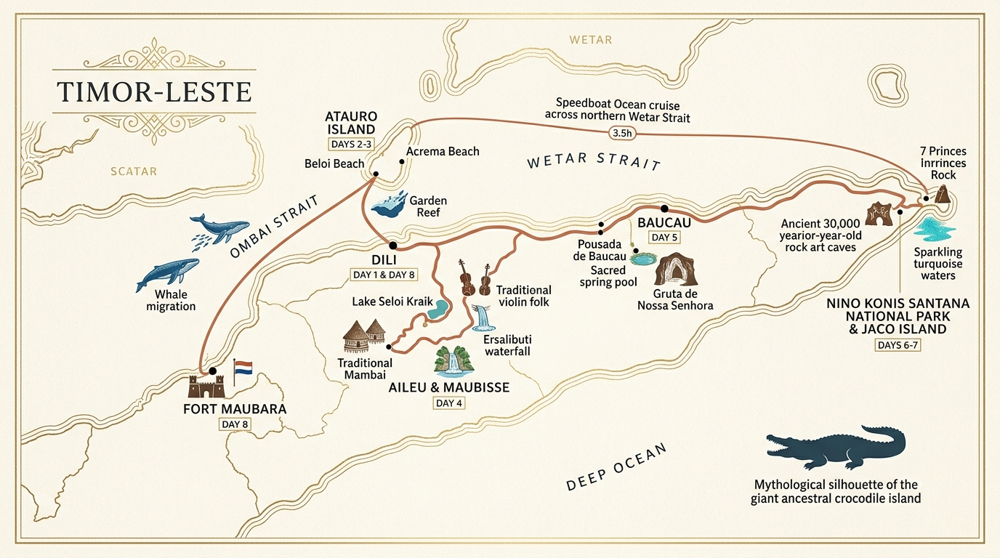
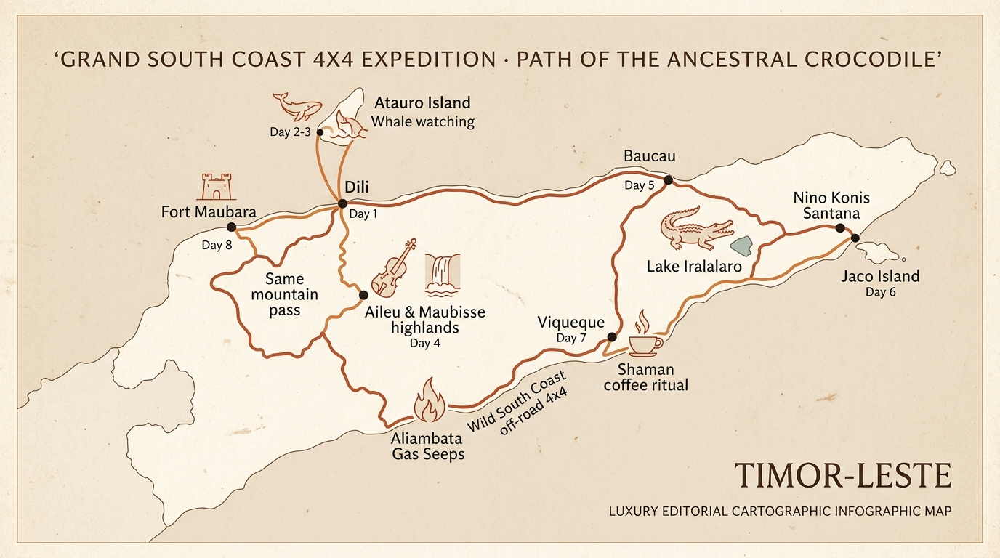
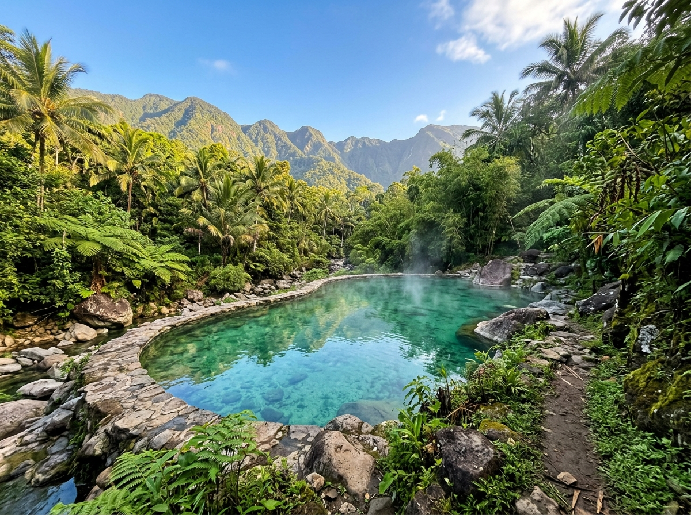

Последнее сакральное побережье за пределами массовой цивилизации. Маленькие камерные группы. Возможность индивидуального тура.
◈ Внедорожники 4x4 Toyota Land Cruiser
|
◈ VIP-трансфер из аэропорта Дили
Официальная Статистика UNWTO & World Bank
Редчайший изолированный уголок планеты
«Тимор-Лесте входит в ТОП-3 наименее посещаемых стран мира. За весь год в страну въезжает менее 10 000 досуговых туристов (это в среднем менее 30–50 туристов на всю страну одновременно!). В столице Дили постоянно проживает около 100 европейцев и иностранцев. Это редчайший изолированный уголок планеты, но лет через пять всё может измениться — успейте увидеть его первым.»
< 50
Туристов на всю страну одновременно
~100
Европейцев-экспатов в Дили
5 Лет
До появления массового туризма
Проживание & Комфорт
Где Мы Живем: Лучшие Отели Региона
Мы выбираем максимально комфортные 4-звездочные отели и проверенные исторические резиденции с отличными отзывами.
4★ Премиум · Дили
★ 8.3 Booking
Novo Turismo Resort & Spa
Флагманский отель столицы на первой линии океана. Бассейн с видом на порт Дили, просторные кондиционированные номера, хороший ресторан и тишина.
Категория: Superior Ocean
Историческое Наследие
Pousada de Baucau
Атмосферный колониальный отель-крепость португальской эпохи. Высокие потолки, винтажная мебель, панорамная терраса с видом на океан и сады.
Категория: Deluxe Heritage
Эко-Бунгало · Остров Атауро
Atauro Waterfront Eco Lodge
Уютные бунгало из натурального дерева прямо на белоснежном берегу. Выход к прозрачному коралловому рифу за несколько шагов от номера.
Категория: Beachfront Bungalow
Аутентичная Гастрономия
Карта Вкусов Тимора-Лесте
Свежайший улов Индо-Тихоокеанского океана, древнейшие горные рецепты запекания в бамбуке и португальское колониальное гастрономическое наследие.
🐟
Остров Атауро & Побережье
Ikan Saboko
Свежевыловленная океаническая рыба (красный снэппер, тунец), маринованная в диком лемонграссе, листьях кафрского лайма, куркуме и луке-шалоте, плотно завернутая в пальмовые листья и запеченная на кокосовых углях.
* Подается с печеным бататом и соком свежего лайма.
🎋
Горы Маубиссе & Айлеу
Tukir Maubere (В Зеленом Бамбуке)
Главная горная кулинарная традиция народа Мамбаи: отборное мясо или рыба со смесью высокогорных трав запечатываются в свежесрубленный толстый ствол зеленого бамбука (Au-Metan) и томятся 4 часа на тлеющих дровах.
* Мясо получается невероятно нежным с тонким древесно-бамбуковым ароматом.
🥥
Традиции Всех Племен
Katupa & Соус Ai-Manas
Рассыпчатый рис, сваренный на кокосовом молоке внутри искусно сплетенных вручную коробочек из пальмовых листьев. Подается со знаменитым тиморским ферментированным соусом Ai-Manas из дикого перца чили, чеснока и цедры лайма.
* Сакральное праздничное угощение на всех традиционных церемониях.
🥘
Баукау & Португальское Наследие
Feijoada Timorense & Paun Timor
Аутентичное колониальное рагу из темной фасоли, копченых колбасок чоризо, мяса и маниоки, томимое в глиняных горшках Pousada de Baucau. Подается с традиционным хрустящим дровяным хлебом Paun Timor и выдержанным вином.
* Вкус португальского гранд-отеля 1950-х годов с видом на океан.
🥧
Столица Дили
Pastel de Nata & Кофейни Дили
Теплые хрустящие корзиночки из слоеного теста с карамелизованным заварным ванильным кремом по старинному рецепту монахов Белема. Выпекаются свежими каждое утро в лучших португальских кофейнях столицы (Páteo / Letefoho).
* Идеальная пара к двойному эспрессо из высокогорной арабики.
🍯
Джунгли Тутвала & Мыс Жако
Дикий Мед Wani & Лобстеры Жако
Редчайший сырой золотой мед гигантских диких пчел Apis dorsata, добываемый охотниками со скал нацпарка, а также свежевыловленные океанические лобстеры и тигровые креветки, зажаренные на костре прямо на пляже перед островом Жако.
* Чистейшая природная органика, не знающая консервантов и цивилизации.
География и Логистика Экспедиции
Путь по Телу Священного Крокодила
В тиморской мифологии остров — это священный прародитель Крокодил (Lafaek). Наш маршрут проходит от океанского дыхания глубин (Атауро) через горный хребет (Маубиссе) к короне востока (остров Жако).
👑 Генеральная Карта Экспедиции (8 Дней)Все 8 Дней • Все Точки • Океан, Горы & Термы
Единая картография путешествия: от прилета в Дили (День 1), китового сафари и рифов острова Атауро (Дни 2–3), через горные озера, скрипки и водопады Маубиссе (День 4), розовый колониальный замок Баукау (День 5), сакральный нацпарк, скалы Batu Tatu и необитаемый остров Жако (День 6–7), до горячих минеральных терм Marobo Hot Springs (38–40°C) и голландского форта Маубара 1756 года (День 8).
Маршрут 1 (Классика Премиум)Север & Скоростной Катер
Северное Побережье & Морской Круиз

2 дня на о. Атауро (киты + пляж Acrema), фолк-концерт у озера Seloi Kraik, водопады Ersalibuti, Баукау, наскальная живопись и Жако. Возврат в Дили на частном скоростном катере за 3.5 часа по морю.
Маршрут 2 (Гранд Офф-роуд)Дикий Юг & Вечные Огни
Большое Кольцо 4x4 & Огни Алиамбата

Полное кольцо через весь остров: озеро крокодилов Иралаларо, Жако, спуск на дикий юг Викеке, ритуал у вечного огня метана в Алиамбата, форсирование рек и горный перевал Саме.
⏱️ Времена Переходов Между Ключевыми Точками:
Этап 1 • Океан
📍 Дили ➔ 🚤 Остров Атауро
~1.5 часа на скоростном катере через глубоководный пролив китов (3000 м).
Этап 2 • Горы & Озеро
📍 Дили ➔ 🚘 Айлеу / Маубиссе
~3.5–4 часа на 4x4. Концерт на озере Seloi Kraik, водопады Ersalibuti, деревня Мамбаи.
Этап 3 • Север & Цитадель
📍 Маубиссе ➔ 🚘 Баукау
~3.5–4 часа на 4x4. Крепость Pousada de Baucau, купель и пещера Gruta de Nossa Senhora.
Этап 4 • Сакральный Восток
📍 Баукау ➔ 🚘 Нацпарк Тутвала
~4–4.5 часа на 4x4. Озеро Иралаларо, Скала 7 Принцев и пещеры 30 000 лет.
Этап 5 • Райский Остров
📍 Пляж Валу ➔ 🚣 Остров Жако
~15–20 минут на лодке. Белоснежный песок, дикие олени, снорклинг без волн.
Этап 6 • Финал
📍 Восток ➔ 🚤/🚘 Возврат в Дили
~3.5 часа на скоростном катере по морю ИЛИ ~5.5-6 часов на 4x4 через форт Маубара.
Варианты Участия
Выберите Программу
Маленькие камерные группы. Возможность индивидуального тура.
Тимор-Лесте: Полное Кольцо (8 Дней)Все завтраки включены. Проживание в Novo Turismo 4* (Дили) и Pousada de Baucau. 4x4 Land Cruiser.
Прилет в Дили. VIP-встреча у трапа персональным внедорожником Toyota Land Cruiser Prado 4x4. Чек-ин в Novo Turismo Resort 4*. Панорамный подъем к Cristo Rei, купание на белоснежном пляже Dolok Oan, свежие корзиночки Pastel de Nata с кофе в португальском кафе и закатный ритуал благословения пути (Hamulak) со старейшиной на пляже Areia Branca.
👑 Эксклюзивный VIP-контакт (Опция): Неформальный кофе и дипломатический брифинг в Дили с сыном Президента страны Лоро Хорта (организуется через Патрика).
Двухдневное медитативное погружение на острове Атауро без суеты. Проживание в приватных бунгало Atauro Waterfront Eco Lodge. Два глубоководных сафари к карликовым синим китам (Pygmy Blue Whales), снорклинг на рифе-рекордсмене биоразнообразия и экспедиция в бирюзовую лагуну Acrema Beach.
🐋 Медитация с Китами & Дикие Пляжи
• 2 Дня на Острове: Глубокое погружение — утренние выходы к китам в пролив Омбай-Ветар.
• Acrema Beach: Уединенная северная бирюзовая лагуна с белым песком и деревянными лодками.
* Знакомство с женщинами-ныряльщицами Wawata Topu и ужины со свежими морепродуктами под звездами.
▶ ВИДЕО: МИГРАЦИЯ КИТОВ
ДЕНЬ 04
Хребет Крокодила: Озеро Seloi Kraik, Фолк-Концерт, Водопады & Деревня Мамбаи
Возвращение на катере в Дили и подъем на 4x4 в высокогорный округ Айлеу. Приватный акустический концерт ансамбля Grupu Muzika Seloi Kraik (скрипки violina, барабаны babadok, серебряные короны Kaibauk) у горного озера с дегустацией органического кофе. Купание в глубоких чашах водопадов Ersalibuti & Kilelo, посещение традиционной деревни Мамбаи и ночевка в усадьбе Pousada de Maubisse (1500 м).
🎶 Этно-Погружение & Купание в Джунглях
• Приватный концерт у озера: Живая аутентичная музыка народа Мамбаи прямо на озерном берегу.
• Купание в водопадах: Скальная чаша Ersalibuti и горные каскады Kilelo Waterfall.
* Портретные фото в Tais, дикий рынок Маубиссе и дегустация блюда Tukir в бамбуке.
Спуск по горным серпантинам на северное побережье. Заселение в историческую розовую крепость Pousada de Baucau 4★. Купание в природной минеральной купели со скальными каскадами, посещение мистической пещерной святыни Gruta de Nossa Senhora, оплетенной корнями священного баньяна, и колониального рынка 1932 года.
📍 Купание у священного источника: Чистейшая бирюзовая вода, природные каскады и ужин с португальской фейжоадой и выдержанным вином.
ДЕНЬ 06-07
Голова Крокодила: Озеро Иралаларо, Скала 7 Принцев, Живопись 30k Лет & Остров Жако
Экспедиция в нацпарк Нину-Кониш-Сантана. Наблюдение за священными крокодилами на озере Иралаларо. Осмотр Скалы 7 Принцев (Pati-Patinu Haliwana), пещер с наскальной живописью возрастом 30 000 лет (Liman Estampado) и переправа на необитаемый остров Жако с дикими оленями.
🧭 Два Варианта Финала:
• Вариант А (Север): Скоростной морской круиз на частном катере напрямую в Дили (3.5 ч) + SPA и гала-ужин.
• Вариант Б (Юг): 4x4 офф-роуд к Вечным Огням Алиамбата (варка кофе на огне земли с шаманами) и VIP Сафари-Глэмпинг на пляже.
Глубокий релакс в изумрудных минеральных термах Marobo Hot Springs (Termas de Marobo): природная горячая вулканическая вода 38–40°C в каменных купелях среди пальмовых террас и горных пиков. Визит в голландский колониальный Fort Maubara (1756 г.) с чугунными пушками XVIII века, покупка тканей Tais и кофе, VIP-трансфер на Land Cruiser Prado в аэропорт Дили.
♨️ Термальный Спа-Релакс: Идеальное завершение 8-дневного офф-роуда — полное расслабление мышц в целебной минеральной воде перед вылетом на Бали.

Тимор-Лесте: Экспресс (3 Дня)Киты, Остров Атауро, Горная деревня Seloi Kraik и Водопад Докомали.
€3 500
ДЕНЬ 01
Дили и 4x4 Трансфер
Встреча в аэропорту на 4x4 Land Cruiser. Novo Turismo 4*, прогулка по столице, кофе и Ascension Oil.
ДЕНЬ 02
Киты & Риф Атауро
Выход на скоростном катере к синим китам в пролив Омбай-Ветар. Снорклинг на богатейшем коралловом рифе острова Атауро.
• Март – Апрель: Северная миграция (Австралия → море Банда).
▶ ВИДЕО: МИГРАЦИЯ КИТОВ
ДЕНЬ 03
Деревня Народа Мамбаи & Водопад Dokomali
Поездка в высокогорную деревню народа Мамбаи (Mambai), фотосессия с жителями в национальных нарядах Tais, плантации Маубиссе, камни Tatu Magic Rocks и водопад Dokomali Waterfall. Трансфер в аэропорт.
Аутентичный Бали (5–7 Дней)Сакральный Бали без мишуры. Музей Neka Art Museum и прямой диалог со старейшинами.
От €7,500
ДЕНЬ 01-02
Культура Убуда & Neka Art Museum
Проживание в премиальном бутик-отеле. Частный визит в музей **Neka Art Museum**, где выставлены работы Валерия Латыпова.
ДЕНЬ 03-05
Диалог со Старейшинами без Переводчиков
Валерий свободно владеет индонезийским языком (BIPA-2) и проводит живые встречи с неговорящими по-английски хранителями балийских традиций.
✨ Комбо-Экспедиция: Бали (7 Дней) + Тимор-Лесте (5 Дней)7 дней погружения в сакральную культуру Бали + 5 дней автоэкспедиции по дикому Тимору.
Расчет по запросу
Двойной Маршрут для Искателей
Сначала 7 дней эстетики, расслабления и встреч с хранителями традиций на Бали, затем часовой перелет в Дили и 5 дней настоящей экспедиции на внедорожниках по первозданному Тимору.
Автор и Проводник
Валерий Латыпов
«Главная ценность сегодня — настоящий, неискаженный опыт и чистая тишина, которую уже невозможно найти на массовых курортах.»
Прямой разговор без переводчиков: Валерий свободно владеет индонезийским языком (сертифицированный уровень BIPA-2). Это обеспечивает прямой диалог со старейшинами и хранителями традиций.
Признание в искусстве: Живописные работы Валерия находятся в коллекции знаменитого национального музея Neka Art Museum в Убуде.
Маленькие Камерные Группы
Запросить Участие
Маленькие камерные группы. Возможность проведения полностью индивидуального тура под ваши даты.
 4★ Премиум · Дили
★ 8.3 Booking
4★ Премиум · Дили
★ 8.3 Booking
 Историческое Наследие
Историческое Наследие
 Эко-Бунгало · Остров Атауро
Эко-Бунгало · Остров Атауро